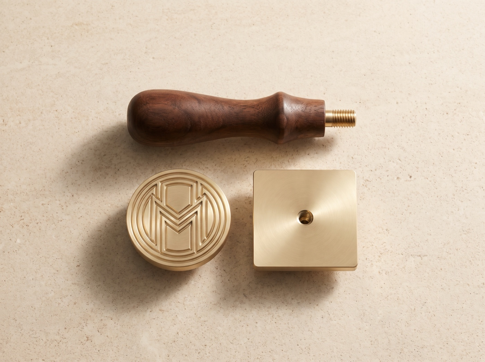

The short answer
- Square the ram first. A ram that is out of square gives a mark that is deep on one side and faint on the other.
- Marks over 35 mm need a hardened steel distribution plate between ram and stamp to spread the load and keep depth even.
- Match the press to the face: a 1-ton press suits small and medium faces; step up to 2-ton for 2-inch and larger faces or 8–10 oz leather.
- Dwell and pressure scale with leather weight (4–10 oz): lighter and shorter for thin, heavier and longer for thick.
- Keep ice and leather heads strictly separate. M8 heads are interchangeable, so label them.
1-ton vs. 2-ton arbor press: which do you need?
An arbor press turns a hand lever into controlled, vertical force, which is why it gives a more even leather impression than a mallet, particularly on large faces. The right size depends on face area and leather weight. The figures below are practical starting guidance, not a rated specification, so never exceed your press’s own rating and always test on an offcut.
| 1-ton arbor press | 2-ton arbor press | |
|---|---|---|
| Best for | Small to medium faces, e.g. 1.5-inch (38 mm) marks | 2-inch (50 mm) and 2.5-inch (63 mm) faces, dense marks, heavier leather |
| Leather weight | 4–7 oz veg-tan comfortably | 6–10 oz veg-tan, plus larger solid faces |
| Lever feel | Light; easy to over-pull on small marks | Firmer; more reserve for big faces |
| Watch for | Running out of reserve on 2-inch or larger solid marks | More force available than the leather needs; ease off |
| Distribution plate | Use for marks over 35 mm | Use for marks over 35 mm |
Step-by-step setup: from bare press to first impression
- Secure the press. Bolt it to a solid bench so it cannot walk when you pull the lever.
- Square the ram. Lower the ram to the table with no stamp fitted. Check with a small engineer’s square that the ram face is parallel to the table, and shim or adjust if it is not. Square before every new setup, and again if the bench is moved.
- Fit the stamp. Use the M8 threaded arbor rod for a rod-fed ram, or use the flat-back press die with the head alone (see below).
- Add a distribution plate for marks over 35 mm. A flat, hardened steel plate between the ram and the back of the stamp spreads the load and prevents uneven depth.
- Prepare the leather. Case 4–10 oz veg-tan so it is cool, firm and slightly pliable, and place it on a flat, hard backing.
- Test on an offcut. Start with light pressure, check depth and evenness, and adjust.
- Make the impression. Pull the lever smoothly to the dwell below, hold, release and lift straight up.
Squaring the ram and the distribution plate
Uneven depth is the most common arbor-press complaint, and it nearly always comes from geometry, not from the stamp. Two things fix it.
- A square ram. With the stamp removed, bring the ram face to the table and confirm it is parallel. Even a slight tilt shows as a deep side and a faint side. A quick check: lightly ink the stamp face, press on scrap, and compare edge to edge.
- A hardened steel distribution plate for marks over 35 mm. A ram’s contact area is small compared with a large stamp back. Without a plate, the load concentrates in the middle, which can dish the impression. A flat, hardened plate spreads the force evenly across the whole face.
Keep the plate flat, clean and free of burrs, and larger than the stamp back. Check it for wear and rock before each session.
Leather weight, dwell and pressure: a starting guide
Heavier leather needs a little more pressure and a slightly longer hold to let the fibres compress and set. These are starting points for properly cased veg-tan; adjust on an offcut, one variable at a time.
| Leather weight | Thickness | Pressure | Dwell |
|---|---|---|---|
| 4–5 oz | 1.6–2.0 mm | Light to moderate | About 2–3 s |
| 6–7 oz | 2.4–2.8 mm | Moderate | About 3–4 s |
| 8–10 oz | 3.2–4.0 mm | Firm, steady | About 4–5 s |
Pull smoothly: a jerk makes a double impression. If you see a halo, check relief depth, edges and casing: our halo troubleshooting guide covers all three. More pressure will not fix it.
M8 threaded arbor rod vs. flat-back press die
Our brass heads are designed to be used two ways, so the same head moves between a mallet, an arbor press and a handle.
| M8 threaded arbor rod | Flat-back press die | |
|---|---|---|
| How it mounts | Threads into the head’s M8 centre and into the ram or a rod holder | The head sits on the table; the ram presses on its flat back through a plate |
| Best for | Small and medium heads, repeat work, quick swaps | Large marks, dense artwork, maximum evenness |
| Watch for | Thread seated fully; rod square to the head | Flat, hardened plate; head centred under the ram |
Either way, check that the head is fully seated and the ram is square before you load the leather.

Keep ice and leather heads strictly separate
The M8 thread makes heads interchangeable, which is useful and also a risk. Never use a head that has been pressed into leather on ice.
- Leather transfers residue. Tannins, oils, dyes and finishes can remain on a brass face. Ice stamps must contact only plain-water ice, so keep them clean of anything from the workshop.
- Label every head on the back or the box: “ICE” or “LEATHER”. Store them in separate, marked containers.
- Keep dedicated sets. If you make both, order a dedicated ice head and a dedicated leather head rather than sharing one.
- Don’t cross handles carelessly. A walnut ice handle and a workshop arbor rod should not get mixed between sessions.
A note on the alloy
Lead-free here is a metallurgical statement, not a certification: our target alloy is a bismuth lead-free eco-brass, and an optical-spectrometer reading of a supplier alloy sample came in at about 0.0022% lead (≈ 22 ppm) against the 0.25% (2,500 ppm) NSF/ANSI 372 drinking-water plumbing threshold, used here only as a reference benchmark. That is a sample reading, not a batch report: every production batch is spectrometer-checked and its batch sheet published before dispatch.
Quick questions, straight answers
Do I need a 1-ton or 2-ton arbor press for a brass maker’s mark?
A 1-ton press suits small and medium faces such as 1.5-inch marks on 4–7 oz leather. Step up to a 2-ton press for 2-inch and larger faces or 8–10 oz leather. Never exceed your press’s own rating and test on an offcut.
Why use a steel plate on marks over 35 mm?
A ram’s contact area is small compared with a large stamp back. A flat hardened steel distribution plate spreads the load evenly so the impression does not come out deeper in the middle or on one side.
How long should I hold the press on veg-tan leather?
As a starting guide, about 2–3 seconds on 4–5 oz, about 3–4 seconds on 6–7 oz and about 4–5 seconds on 8–10 oz, with light-to-firm steady pressure. Adjust on an offcut.
Can I use the same brass head on ice and leather?
No. M8 heads are physically interchangeable, but a head used on leather can carry tannins, oils or finishes. Keep dedicated, labelled ice heads and leather heads and never share one.
Ready to press your mark?
Preview your maker’s mark on leather at the finished size, then see the custom deep-engraved leather stamp: M8 mallet rod included, or use the head alone in an arbor press.